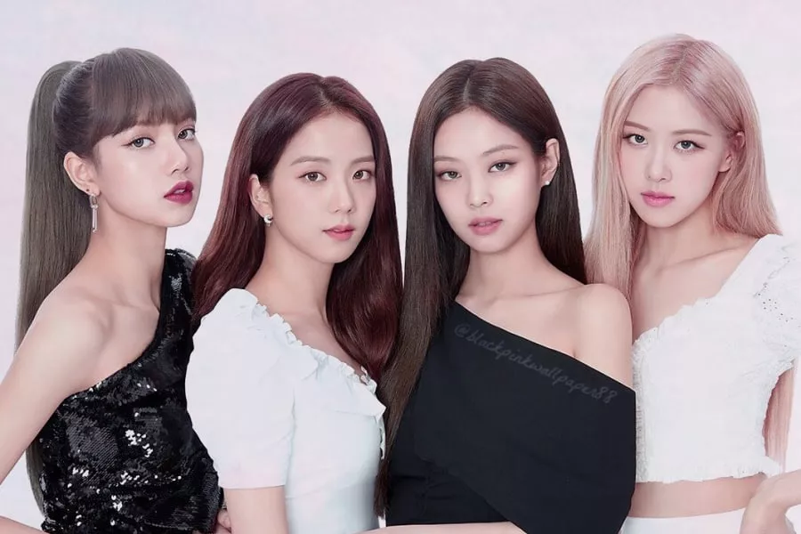
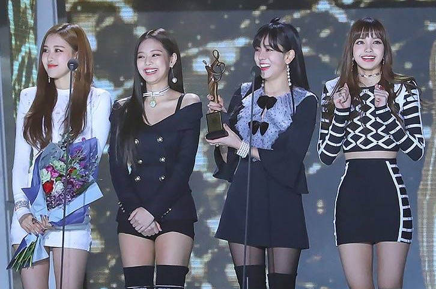
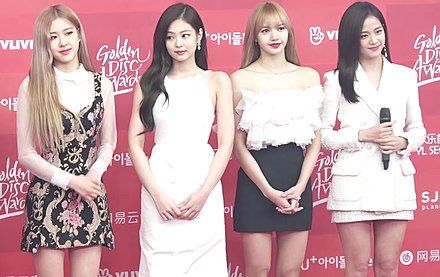

Blackpink (Korean: 블랙핑크; commonly stylized as BLACKPINK or BLΛƆKPIИK) is a South Korean girl group formed by YG Entertainment, consisting of members Jisoo, Jennie, Rosé and Lisa. The group debuted in August 2016 with their single album Square One, which featured "Whistle" and "Boombayah", their first number-one entries on South Korea's Gaon Digital Chart and the Billboard World Digital Song Sales chart, respectively.
Kim Ji-soo was born on January 3, 1995,in Gunpo, Gyeonggi, South Korea and has an older brother and sister. As a child, she played basketball and attended taekwondo classes She was also a fan of TVXQ as a child. Jisoo attended high school at the School of Performing Arts Seoul. In 11th grade, she start-off drama club at her school and took larger experience through auditions.
Jennie Kim who was born on January 16, 1996, known mononymously as Jennie, is a South Korean singer and rapper. Born and raised in South Korea, Kim studied in New Zealand at the age of eight for five years, before returning to South Korea in 2010. She debuted as a member of the girl group Blackpink formed by YG Entertainment in August 2016. In November 2018, Jennie made her debut as a solo artist with the single "Solo". The song was a commercial success domestically and internationally, topping both the Gaon Digital Chart and Billboard's World Digital Songs chart.
Roseanne Park was born on 11 February 1997, better known by the mononym Rosé (Korean: 로제), is a Korean-New Zealand singer and dancer based in South Korea. Born in New Zealand and raised in Australia, Rosé signed with South Korean label YG Entertainment following an audition in 2012, training there for four years. She made her debut as the main vocalist and lead dancer of the girl group Blackpink in August 2016 and made her solo debut with her single album R in March 2021.
Lalisa Manobal was born on March 27, 1997, better known by the mononym Lisa, is a Thai rapper, singer, and dancer based in South Korea. She is a member of the South Korean girl group Blackpink formed by YG Entertainment. Lisa made her solo debut with her single album Lalisa in September 2021. The album sold over 736,000 copies in its release week in South Korea, making her the first female artist to do so. The music video for its lead single of the same name recorded 73.6 million views on YouTube in first 24 hours of its release, becoming the most-viewed music video in the first 24 hours on the platform by a solo artist.
Blackpink performing "Playing with Fire" at the 8th Melon Music Awards on November 29, 2016
Blackpink at Seoul Music Awards in 2018
Blackpink at the 33rd Golden Disc Awards